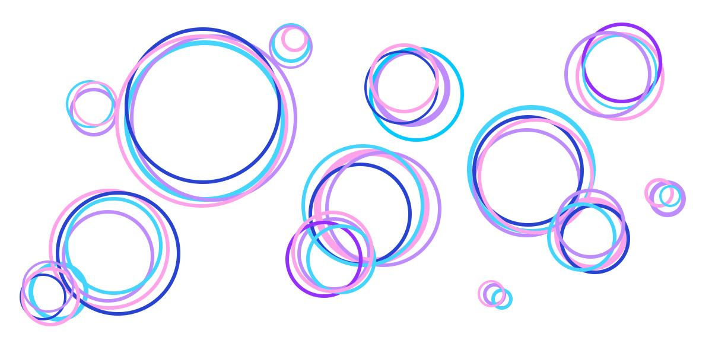
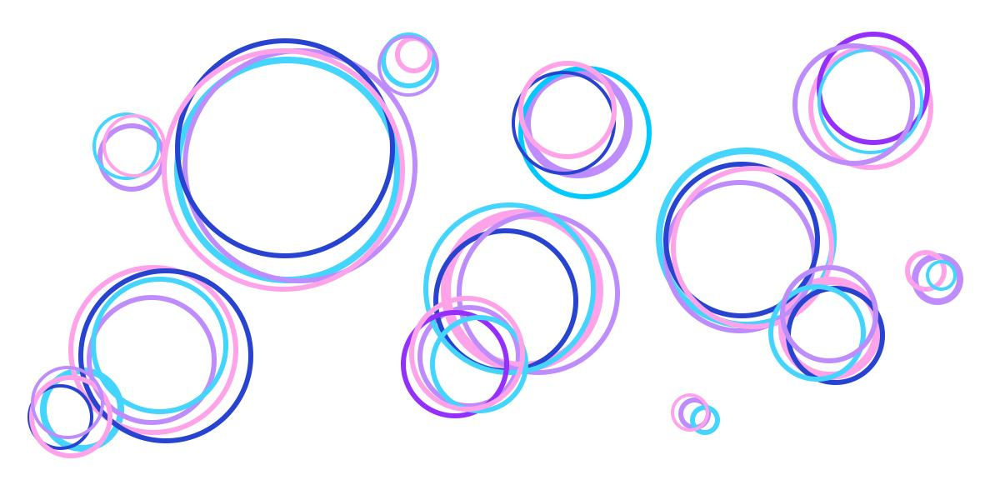

Student. Artist. Teammate. Developer.
I am a student currently participating in the Bloc Frontend Web Development Bootcamp. I became interested in coding when sudoku ceased to quench my thirst for interesting puzzles. I love the challenge that comes with each new problem and the satisfaction of solving it, though my true passion is the process of learning and developing my skill set. In addition to frontend development, I am an artist-of-all-trades -- I partake in traditional arts such as watercolor and acrylic painting as well as digital illustration, cooking, writing, poetry, and many different disciplines of dance.